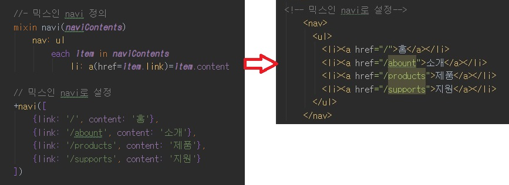

반복문을 배우면서 만든 내비게이션 코드를 다른 프로젝트에 활용하려면 내비게이션 코드를 복사하여 붙여 넣은 후
내용을 수정해야 합니다.
이러한 불편함은 코드를 재사용할 수 있도록 모듈(module)화 하여 해소할 수 있습니다.
Jade는 자바스크립트 함수(function)를 지원하지는 않지만, 이것과 유사한 믹스인(mixin)을 지원합니다.
믹스인을 사용하면 Jade 문서에서 코드를 묶어 모듈화할 수 있습니다.
아래를 참고하여 코드를 입력하면서 믹스인 정의부터 활용 방법까지 알아보겠습니다.

믹스인을 정의할 때는 mixin 키워드를 사용하고, 믹스인 이름을 입력합니다.
이름이 있어야 나중에 믹스인을 호출할 수 있습니다.
믹스인 이름은 읽고 이해하기 쉽게 작성합니다.
이름 뒤에 괄호를 입력한 후 내비게이션을 구성할 콘텐츠를 받는 전달인자를 설정합니다.
전달인자 또한 읽고 이해하기 쉬운 이름으로 작성합니다.
마지막으로 앞의 그림을 참고하여 노란색 영역으로 표시한 내비게이션 템플릿 코드를 입력합니다.
믹스인 정의가 끝나면 // 믹스인 navi로 설정 부분처럼 믹스인 호출을 위해 믹스인 앞에 플러스(+) 기호를 붙입니다.
그리고 믹스인에 전달인자 값으로 내비게이션 콘텐츠인 배열을 넘겨줍니다.
저장하면 믹스인을 호출한 결과가 잘 반영되어 있습니다.
깨알 Tip
믹스인을 호출할 때 전달하는 인자 값은 변수에 대입하던 값과 달리 여러 줄로 입력이 가능합니다.